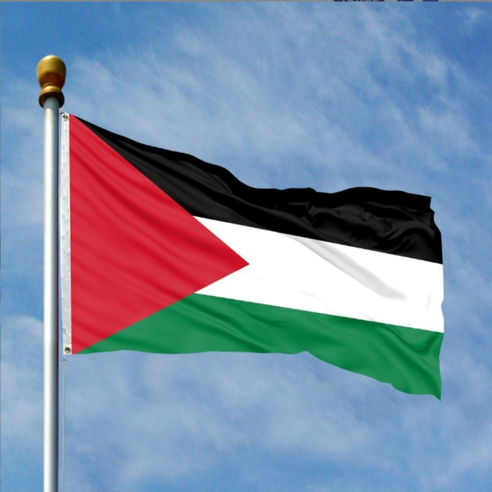
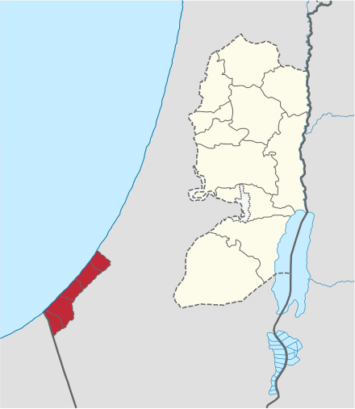
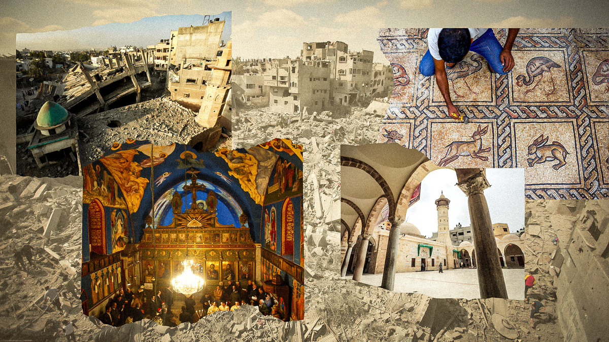
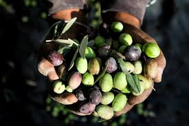

History
Gaza has a long and rich history dating back thousands of years. It has been inhabited since ancient times and has been ruled by various empires and civilizations, including the Ancient Egyptians, Philistines, Assyrians, Persians, Greeks, Romans, and Byzantines.
Geography
Gaza is a coastal territory located on the eastern coast of the Mediterranean Sea. It is bordered by Israel to the north and east, and Egypt to the south. The territory is approximately 41 kilometers (25 miles) long and 6 to 12 kilometers (4 to 7.5 miles) wide, with a total area of about 365 square kilometers (141 square miles).
Culture
Gaza has a rich cultural heritage influenced by its long history and diverse population. The culture of Gaza includes traditional music, dance, cuisine, and crafts. Palestinian Arabic is the primary language spoken in the region, and Islam is the predominant religion.
Economy
The economy of Gaza is primarily agricultural, with key crops including olives, citrus fruits, vegetables, and flowers. Fishing is also an important industry due to Gaza's coastal location. However, the economy has been severely impacted by political instability, conflict, and the blockade imposed by Israel and Egypt.
Politics
Politics in Gaza are heavily influenced by the ongoing Israeli occupation. The territory is governed by Hamas, a Palestinian Islamist political organization and militant group. Gaza has been the site of numerous conflicts between Hamas and Israel, leading to significant humanitarian crises and international attention.